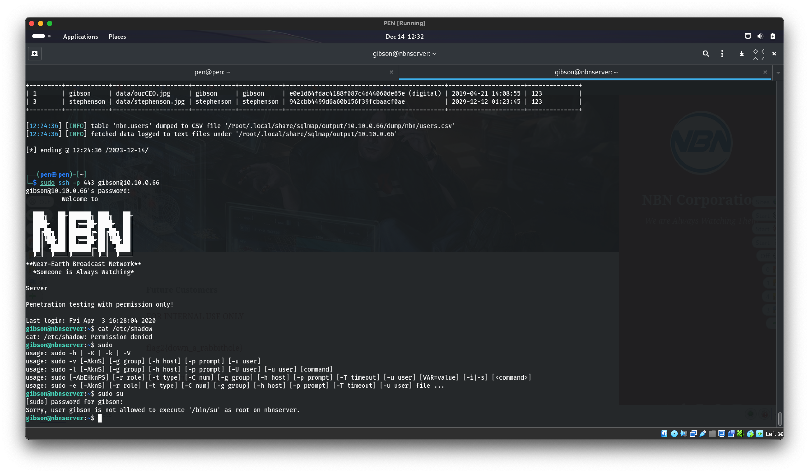

NBN Corporation Penetration Test
Comprehensive penetration test of NBN Corporation's infrastructure uncovering critical vulnerabilities across web applications and servers, scoring findings against NIST CVSS v3, and delivering prioritized remediation recommendations to reduce systemic risk.
[SCROLL TO EXPLORE]
View ProjectThe Problem
NBN Corporation's infrastructure had never been put under adversarial pressure. Without a comprehensive penetration test, the organization had assumptions, not a reliable picture of its actual attack surface. The goal was to find out what a real attacker would find, score the severity of every finding objectively, and hand back a remediation roadmap that was actionable rather than just alarming.
What's Included
- Comprehensive penetration test across NBN Corporation's web applications and server infrastructure
- Identification of critical vulnerabilities including XSS, SQL Injection, Local File Inclusion, and unauthorized server access
- NIST CVSS Version 3 scoring for all findings with an average criticality score of 8.86
- Root access achieved across all systems, validating full compromise scenarios
- Prioritized remediation recommendations including input sanitization, system updates, enhanced password policies, and microservice architecture to isolate network assets
Impact
An average CVSS score of 8.86 across findings tells the story clearly: this wasn't a theoretical risk assessment, it was a near-total compromise. Achieving root access on all systems demonstrated that the attack surface wasn't just wide, it was deep. The resulting remediation roadmap gave NBN Corporation a prioritized, evidence-based path to closing those gaps before a real attacker could follow the same steps.

Technical Stack
- Metasploit: exploitation framework for vulnerability validation and root access
- Nmap: network reconnaissance and service enumeration
- Burp Suite: web application testing for XSS, SQLi, and LFI
- Nessus: automated vulnerability scanning
- NIST CVSS v3: standardized vulnerability scoring and risk classification